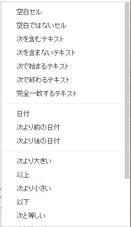

条件付き書式
Googleスプレッドシートで条件付き書式を設定します、
・特定のセルを目立たせる
これらの目的で使われる機能です。
商品コードが入っていて、数量が未入力の時
E列の数量のセルに色を付けてみましょう。

E2セル～E11セルを選択し、
メニューの
表示形式→条件付き書式
セルの書式設定の条件

「カスタム数式」を選択します。
=AND($B2<>"",$E2="")
と入力
ANDは、小文字でandでも良いです。
=から書き始め、数式の結果が、
TRUE,FALSEのどちらかになる数式を書きます。
=COUNTIF($A$1:$A$100,A1)>1
=$B1="Yes"
このように、
何かと何かを比べる数式になります。
基本の数式は、
=○○>△△
=○○<△△
=○○>=△△
=○○<=△△
=○○=△△
この条件が複数になるときは、
論理演算（AND,OR,NOT）で囲んで作成します。
ここで入れる数式は、
適用範囲の一番上のセルに対する数式を入力します。
2番目以降のセルは、一番上の数式がコピーされることになります。
従って、絶対参照の$をしっかりと付ける必要があります。
書式設定のスタイル
以上で設定が完了したので、
日本語の文章通りなので、使う上で困ることはないでしょう。
そして、カスタム数式で全て対応できますので、
とにかく、カスタム数式を使えるようにして下さい。
同じテーマ「スプレッドシート入門」の記事
入力規則
新着記事NEW ・・・新着記事一覧を見る
VBA100本ノック 100本目：WEBから100本ノックのリストを取得｜VBA練習問題（3月3日）
VBA100本ノック 99本目：自動席替え（行列と前後左右が全て違うように）｜VBA練習問題（3月2日）
VBA100本ノック 98本目：席替えルールが守られているか確認｜VBA練習問題（3月1日）
VBA100本ノック 97本目：Accessデータを取得（グループ集計）｜VBA練習問題（2月27日）
VBA100本ノック 96本目：Accessデータを取得（マスタ結合&抽出）｜VBA練習問題（2月26日）
VBA100本ノック 95本目：図形のテキストを検索するフォーム作成｜VBA練習問題（2月24日）
VBA100本ノック 94本目：表範囲からHTMLのtableタグを作成｜VBA練習問題（2月23日）
VBA100本ノック 93本目：複数ブックを連結して再分割｜VBA練習問題（2月22日）
VBA100本ノック 92本目：セルの色を16進で返す関数｜VBA練習問題（2月20日）
VBA100本ノック 91本目：時間計算（残業時間の月間合計）｜VBA練習問題（2月19日）
アクセスランキング ・・・ ランキング一覧を見る
1.最終行の取得（End,Rows.Count）｜VBA入門
2.RangeとCellsの使い方｜VBA入門
3.変数宣言のDimとデータ型｜VBA入門
4.マクロって何？VBAって何？｜VBA入門
5.Range以外の指定方法（Cells,Rows,Columns）｜VBA入門
6.セルのコピー&値の貼り付け（PasteSpecial）｜VBA入門
7.繰り返し処理（For Next)｜VBA入門
8.セルに文字を入れるとは（Range,Value）｜VBA入門
9.マクロはどこに書くの（VBEの起動）｜VBA入門
10.とにかく書いてみよう（Sub,End Sub）｜VBA入門
- ホーム
- その他
- スプレッドシート入門
- 条件付き書式
このサイトがお役に立ちましたら「シェア」「Bookmark」をお願いいたします。
記述には細心の注意をしたつもりですが、
間違いやご指摘がありましたら、「お問い合わせ」からお知らせいただけると幸いです。
掲載のVBAコードは動作を保証するものではなく、あくまでVBA学習のサンプルとして掲載しています。
掲載のVBAコードは自己責任でご使用ください。万一データ破損等の損害が発生しても責任は負いません。